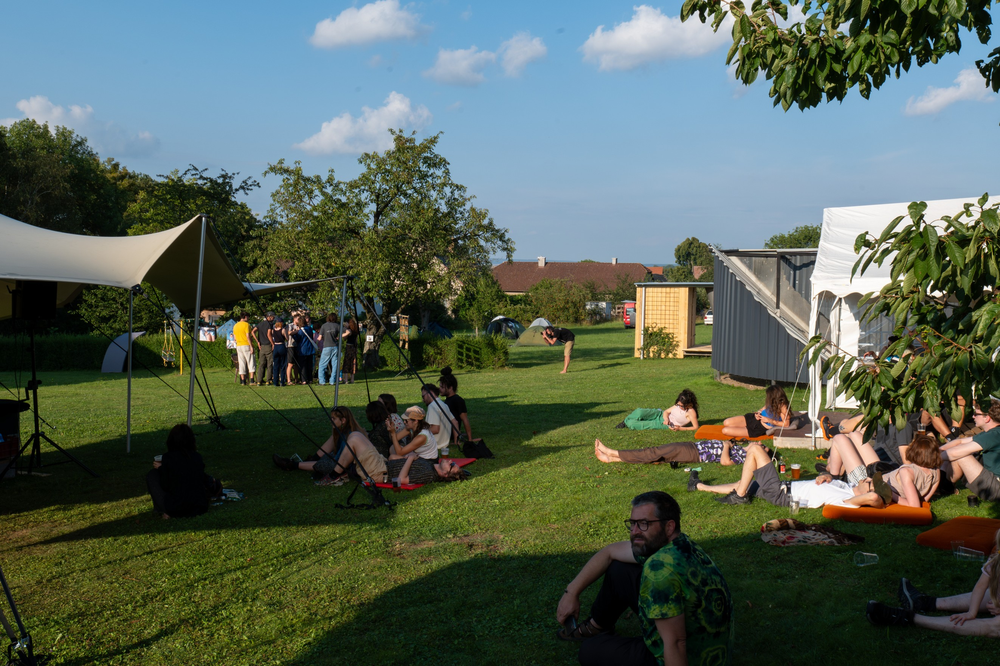
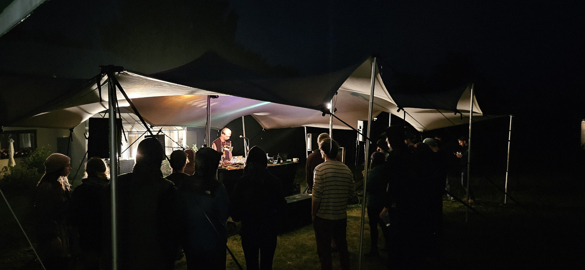
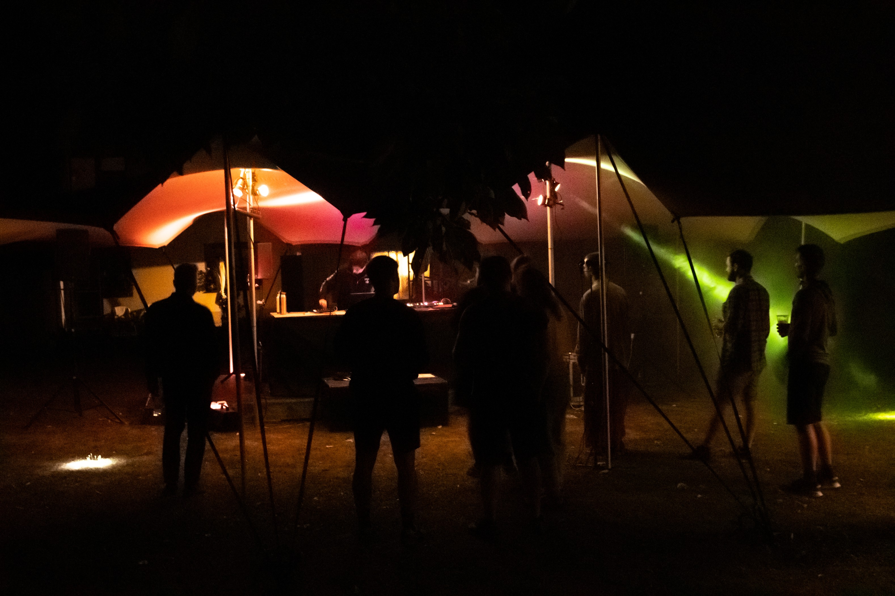
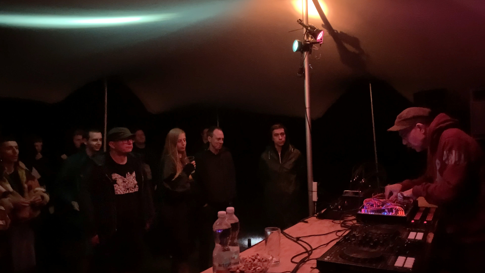
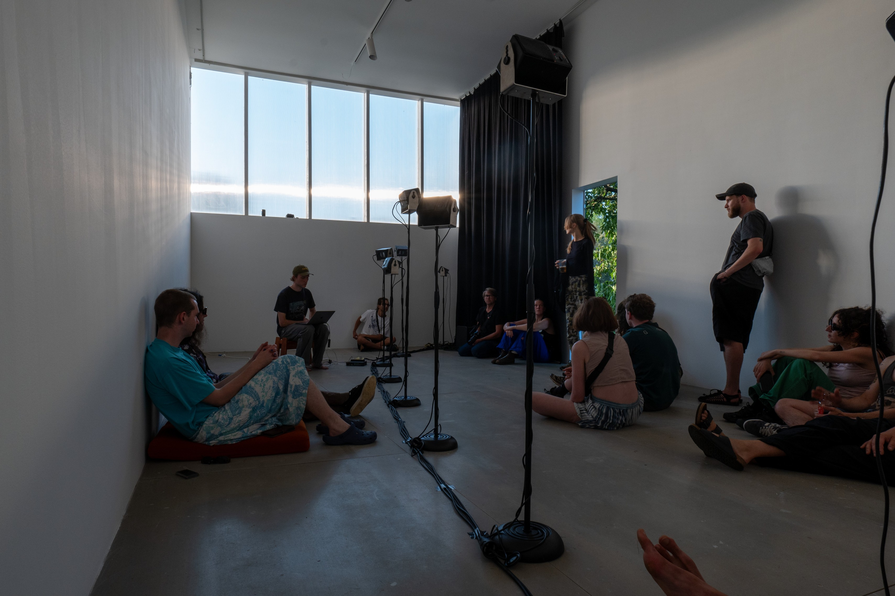
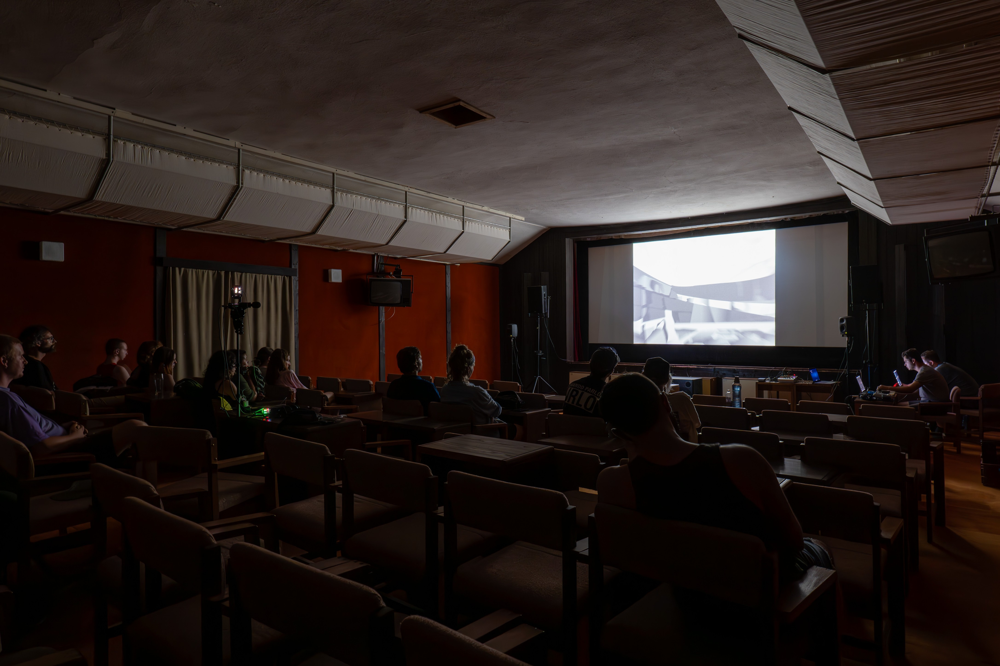

On 1 and 2 August 2025, the eighth edition of the festival Bučení—a festival of experimental electronic music and audio-visual art—will take place at Přespolní in Lubná u Poličky (Czech Republic).

You can get to the festival by train or bus. Train connections go to the stations Česká Třebová or Polička. From there you have to take a bus to Lubná. The bus stop in Lubná is called Obecní úřad (the municipality office), and from there you can walk to Přespolní and the festival Bučení.
Train and bus connections can be found at this link.
Visitors have the option to camp or sleep outside under the stars (bring your own gear). There will be a kitchen with plant-based options and a bar.


The festival brings together artists from diverse genres who work at the intersection of sound, technology, and visual art. From the UK, Bianca Scout & cajm will present their new collaborative project, the second phase of which will also be showcased at PAF festival in December. Bianca Scout is a musician with a background in contemporary and classical dance, whose performances combine movement direction and storytelling, within a distorted landscape of displacement, yearning and the undead. Cajm is a London based collage artist currently working in the cracks between UK rap, film score and sample based sonic experimentation. Past and present collaborators include: Powerplant, Brbko, Jeshi, Coby Sey, Bianca Scout, John Glacier, and Surf Gang. THE NARRATOR is a multidisciplinary visual and immersive experience artist, musician, and writer exploring the healing power of sensory storytelling. Saturday's live performances will be capped off by deconstructed club auteur Junior XL with a DJ/live set and visuals by Nicola Malcolm.


Another group of international artists will include Israeli composer and mastering engineer Amit Dagim, combining modular synthesis, feedback and physical modelling. Italian musician Kinked, who works with materiality and spectral transformation of sound and is a co-founder of the Riforma label. Mexican interdisciplinary artist Rigoberto Gallardo (mvd0ae), who works with digital processing of field recordings, synthesis and archival material. And also the Hague-based collective Slagroom, which programs new sound instruments, creates complex feedback systems and indulges in fried cheese.

The line-up also features Slovak and Czech names, such as the post-club duo SELENoLAr. Digicore collective Brokeway consisting of gemstonemario & grydo & plaza255 & Nikolas Hudcovsky. DJ and editor-in-chief of Swine Daily magazine VLZQUES playing tunes from South American scenes including baile funk, reggaeton and dembow. And other local djs like Krabs & Larch & Mintak9.


The festival will also present the Czech-German project Whisper of the Earth/Das Geflüster der Erde, which deals with the ecological crisis and the possibilities of listening to nature in the Anthropocene. The project will be presented at Bučení in the form of a live performance by Philipp Waltinger & Marcus Kestner transmitted via the Radio Earth platform, followed by a sound installation in the local cinema. Other local artists will include sound artist Michal Cáb and his saxophone, and video feedback artist Adam Smolek with his project "Waves end Waves." The festival will also feature an exhibition by conceptual artist Matěj Smetana entitled Something Else, which continues the artist's exploration of object sequences and their indeterminacy, at Kulturák Archa. During Saturday afternoon, there will also be a workshop on binding diaries, making stamps and charms by Klára Fantová & Šárka Krátká.


Bučení is organised by the Přespolní association based in the Czech countryside. Since 2017, Přespolní has been organising exhibitions, residencies, Bučení festival, and cultural and educational programmes. The festival is supported by the Ministry of Culture of the Czech Republic, the State Cultural Fund of the Czech Republic, the Pardubice Region, the Czech-German Future Fund, and the municipality of Lubná.